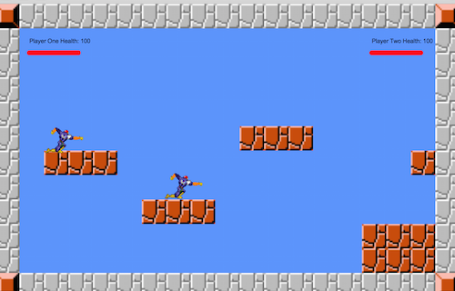
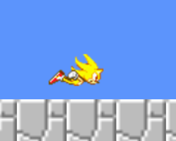

We set out to create a version of the classic Super Smash Bros. game – two different characters fight on a tile-based platform style map, and pick up various items that randomly drop and appear. The players can punch / hit each other, and the first player to have their health hit 0 loses the game.
Our game really came a long way from where we were at the update. During the project update, our game looked like this:
But we didn't like the way the game looked when we just had still images gliding around the screen. So instead, we decided to try to use animations to make the motion look more realistic:
However, our original implementation failed to include a punching animation, which made the gameplay wrong. So that was our next step in implementation. We then created punching animations that looked like this:
Our game ended up with 5 different Javascript files and 3 types of custom classes (in addition to the pre-cut map code from Professor Kapp). First, we added on to the existing pre-cut code to create a modified player object, and split it into a Player 1 file and Player 2 file. Although the files act basically the same, they contain different images and animations. We also implemented an Item class to generate random items, which all ended up being health boosts.
Creating movement for our characters was easy enough, but the first real challenge we ran into was making a reliable punching function. The first obstacle was to make punching / hits non-continuous, so either play would (a) not be able to hold down a key and keep punching continuously, and (b) have to wait for a “cool down” period after one punch. We solved this by implementing a bounce-back function that pushes back a player who’s punched. Also, we created a boolean variable called “beingHit” that in short only allowed a hit to be registered if it’s false.
The final code for our draw loop, with a start and end screen integrated, toggles back and forth when the game is not in play based on the mouse being pressed. Then, if any players were knocked down to 0 health, the game ends. We also created a function to reset the game when it’s over. We hope you like it!